Art Libraries
This is a collection of some of my favorite and previously unseen visual art surrounding my music!
Use the arrow buttons to scroll through each library, and hover over any image for more info!
3D Render BGAs
Most of my 3D work is composed of very simple shapes with glowy colors and reflections - I'm not a Blender expert at all. Though, I think that this kind of simple art can still look incredible, especially when paired with the right music.
Another advantage of these abstract animations is that they can work with a wide variety of songs, and I do re-use my renders often!
They have just enough mystique to be engaging to watch, and I ran the clips through a variety of effects throughout the MV to keep it fresh.
I learn better by practicing rather than furiously taking notes, so I like to multitask. Miiiight have to change that habit in the future though...
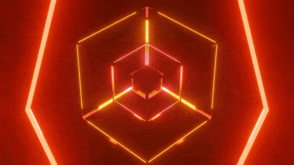
This is one of the very first BGAs I ever made, and yet it's still one of my favorites. The geometry and colors are just so satisfying to watch loop over and over.Most of my 3D work is composed of very simple shapes with glowy colors and reflections - I'm not a Blender expert at all. Though, I think that this kind of simple art can still look incredible, especially when paired with the right music.
Another advantage of these abstract animations is that they can work with a wide variety of songs, and I do re-use my renders often!
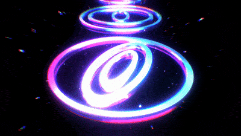
The symbols from reality is decaying's album art make their return! The three shots of these symbols I made were absolutely my favorite BGAs at the time of writing this.They have just enough mystique to be engaging to watch, and I ran the clips through a variety of effects throughout the MV to keep it fresh.
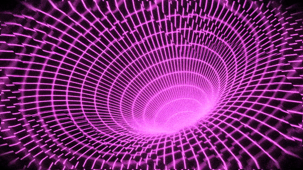
A super simple animation - it's just a wireframe torus rotating - but it's a surprisingly cool effect, especially with the hue shifting and glitchy artifacts.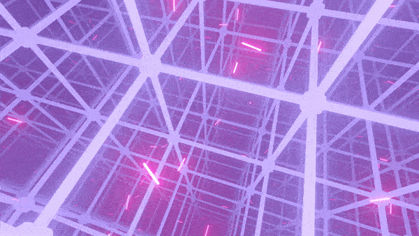
Don't tell anyone, but a ton of the work on this was done during my most boring lectures in university. I actually get a lot of art done during lectures :PI learn better by practicing rather than furiously taking notes, so I like to multitask. Miiiight have to change that habit in the future though...
0/0
The Underscore OC - Kyana
I really admire the gothic/emo aesthetic, so designing and drawing this outfit was super fun. Kyana's definitely not the type of person to wear this normally, but let's be honest, she looks really cute! My justification for it: she had dressed nicely for a date with somebody she really cares about, before coming into work and finding out that her keycard malfunctioned...
Random fact #1: I own a choker necklace exactly like the one she's wearing.
Random fact #2: I was planning to draw her reaching her hand towards the viewer and lifting them by the neck, but it proved to be too difficult to get the perspective looking good...
Speaking of which, I named her after a mineral called Kyanite (even though it's pronounced 'kai-uh-night', unlike her name). Kyanite is formed under intense pressure, and has the notable property of being very durable along one axis, and more fragile along the other. Maybe you can see how those facts tie into her character!
This was the first appearance of Kyana's gun, the KTK-02, which was based on a hue shifted version of a gun render I found on Google. It's cool for her to finally have a ranged option, instead of the usual daggers (named the "Havoc Blades", by the way). If there was ever an Underscore video game, this would definitely be in there somewhere!
Looking back on it now, I feel silly not having done more in-depth planning before getting art - but hey, I was a high-school student stuck inside at the time. I don't think I had much brain function!
Here's a random fact - as in this art, she orignally was supposed to have a small birthmark below her left eye. I ditched it because it was barely noticeable and describing it to artists made me feel ridiculous.
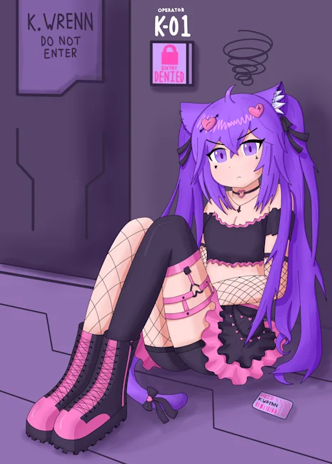
In October 2024, I took several weeks to work on improving my drawing skill, and this was the last artwork I made! It was a much-needed break from music, and I could really see myself improving, which was amazing.I really admire the gothic/emo aesthetic, so designing and drawing this outfit was super fun. Kyana's definitely not the type of person to wear this normally, but let's be honest, she looks really cute! My justification for it: she had dressed nicely for a date with somebody she really cares about, before coming into work and finding out that her keycard malfunctioned...
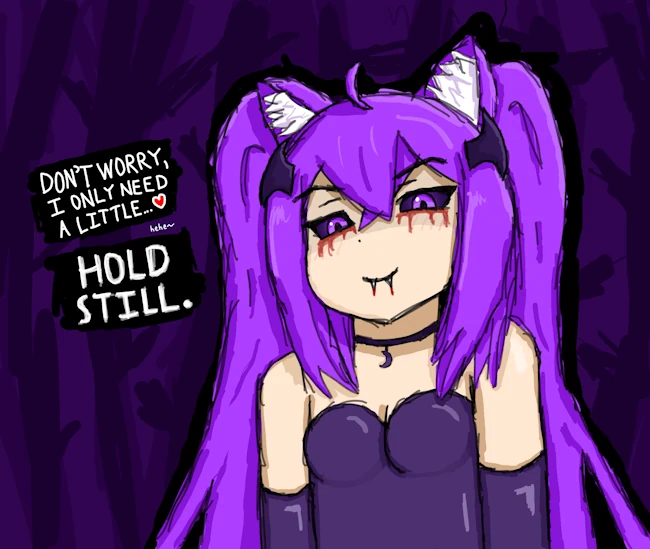
Kyana often gives off a cold and cruel impression, because of how much she cares about her work. I took that character trait and exaggerated it by drawing a vampire version of her for Halloween: Vampyana! I like how sadistic she looks in this - I imagine that she's just found an unlucky victim while stalking in the woods. I think it's fun to imagine that she got cursed by some malevolent spirit, which turned her into a vampire for the month of October!Random fact #1: I own a choker necklace exactly like the one she's wearing.
Random fact #2: I was planning to draw her reaching her hand towards the viewer and lifting them by the neck, but it proved to be too difficult to get the perspective looking good...
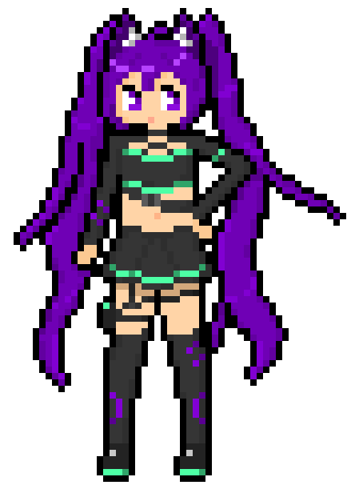
Some pixel art I made of Kyana in her combat outfit! I modeled it after the Alternate Timeline art of course, and I think it ended up looking pretty cute. I've always enjoyed making pixel art, and this was probably my favorite image to make. I made it my profile picture on Discord and a few other places too!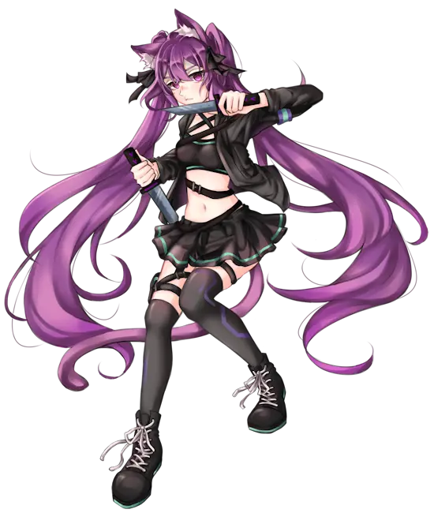
This is the full artwork from the Alternate Timeline album. As I write this, it's definitely my favorite character art! The artist I commissioned it from did an amazing job capturing her stoic expression, I think just from looking at this photo you can get a really good impression of who she is and what she stands for.Speaking of which, I named her after a mineral called Kyanite (even though it's pronounced 'kai-uh-night', unlike her name). Kyanite is formed under intense pressure, and has the notable property of being very durable along one axis, and more fragile along the other. Maybe you can see how those facts tie into her character!
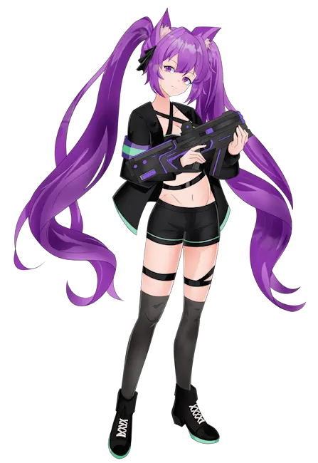
You might recognize this art from the Submachine Strikerz album art! It's actually a little different - for the cover and video, I changed her mouth to a cat mouth (like :3) because it felt more lighthearted. I often make little edits like this to the art I commission, I wonder how many people have noticed?This was the first appearance of Kyana's gun, the KTK-02, which was based on a hue shifted version of a gun render I found on Google. It's cool for her to finally have a ranged option, instead of the usual daggers (named the "Havoc Blades", by the way). If there was ever an Underscore video game, this would definitely be in there somewhere!
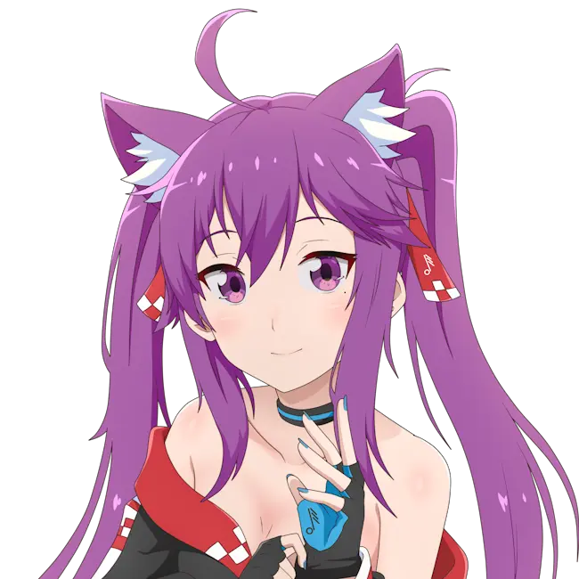
The first ever commissioned art of my OC! This was back in early 2021, somehow. As you can probably see, I had absolutely no idea where I wanted to eventually take her character or design at the time! I basically just asked for a catgirl with purple hair, and the artist did their thing. The color scheme and fingerless gloves stayed for a bit (until Alternate Timeline created the new design), but besides that, nothing from this outfit was ever seen again.Looking back on it now, I feel silly not having done more in-depth planning before getting art - but hey, I was a high-school student stuck inside at the time. I don't think I had much brain function!
Here's a random fact - as in this art, she orignally was supposed to have a small birthmark below her left eye. I ditched it because it was barely noticeable and describing it to artists made me feel ridiculous.
0/0
Unused Artwork
It's not finished with all that empty space, but this could have probably been a pretty solid cover had I continued. Too late now!
What a disaster, thankfully I stopped both of those habits long ago. How far I've come!
Pretty neat idea for art though, definitely going to revisit a similar idea in the future.
The character is mine from the game Code Vein, and everything else is just stuff from online. Initially, my friend Zexphyr was going to make one of these for his character too (she's Kyana's friend), but he never got around to it.
My favorite part is the 'language' of symbols on the left, those are definitely making a return.
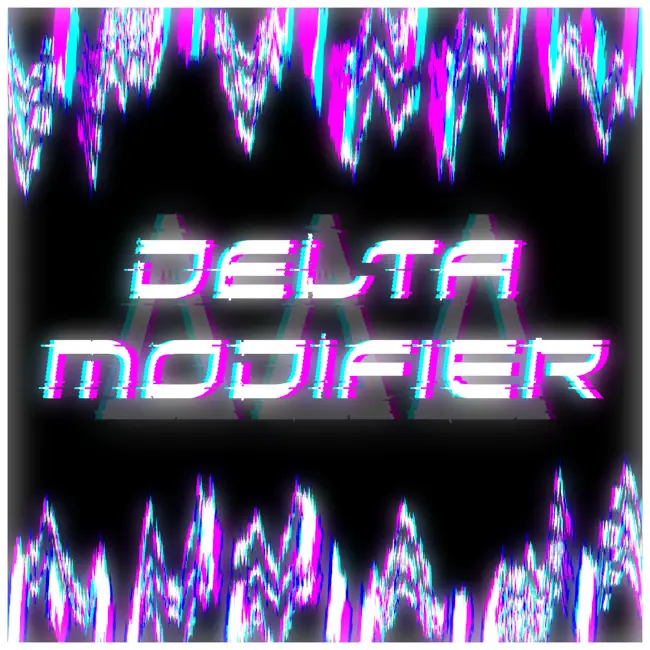
A completely scrapped song that I never even started - I only have this art because I liked the name and was bored during first-year programming classes (re-learning if statements for the 4th time, yahoo!).It's not finished with all that empty space, but this could have probably been a pretty solid cover had I continued. Too late now!
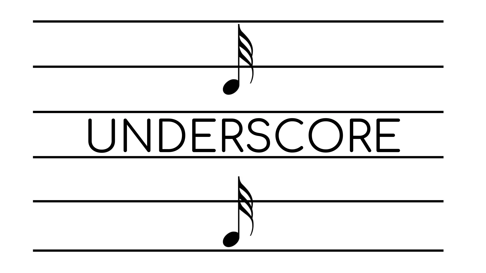
This ABYSMAL waste of bytes is an old channel banner from when I was in elementary school. Back then, I used the font "Comfortaa" for all of my branding, and just stole a 32nd note image from Google (lol).What a disaster, thankfully I stopped both of those habits long ago. How far I've come!
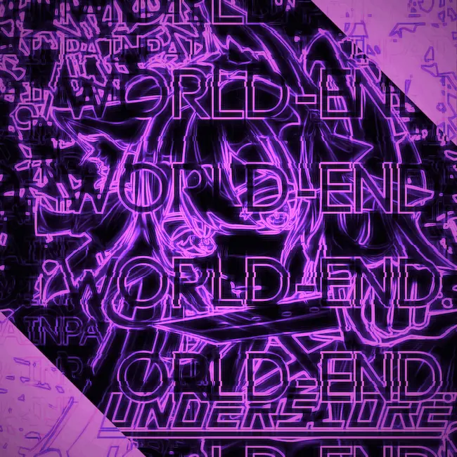
Old art for reality is decaying. I was inspired by the HARDCORE TANO*C album art and those emo breakcore mixes on Youtube. Kinda looks cool actually! But it ultimately didn't fit the emotion of the song, and I felt weird reusing the Alternate Timeline artwork.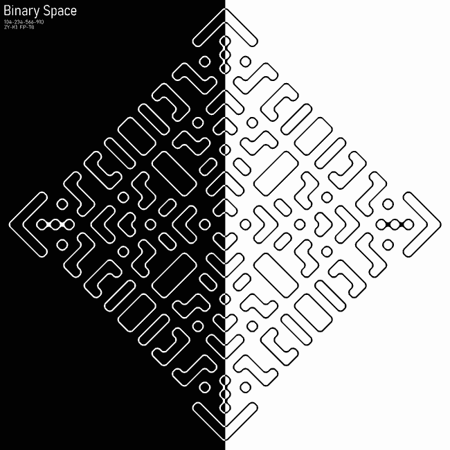
Extremely unfinished album art concept, from right around when I made Threshold. I initially was going to use the whispers from that song in THIS song, but it just never went anywhere!Pretty neat idea for art though, definitely going to revisit a similar idea in the future.
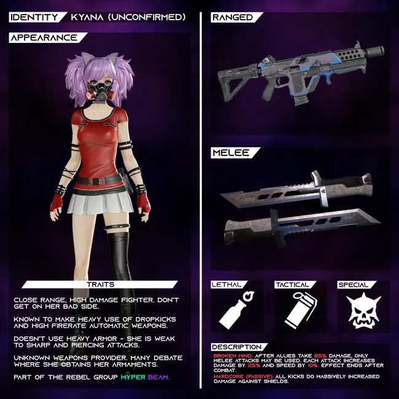
Kyana's loadout?? Yes, indeed. These aren't her canon weapons or abilities by the way - as much as I love the allusion to hardcore kicks. Actually, this is where the idea for her to use a submachine gun originated (as a reference to speedcore kicks).The character is mine from the game Code Vein, and everything else is just stuff from online. Initially, my friend Zexphyr was going to make one of these for his character too (she's Kyana's friend), but he never got around to it.
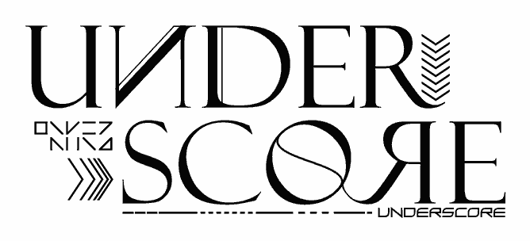
I was trying to make a more futuristic logo for some time, but eventually decided that I didn't want to overcomplicate things. This could probably still work as a one-off logo for album art, but no WAY would I ever use it permanently.My favorite part is the 'language' of symbols on the left, those are definitely making a return.
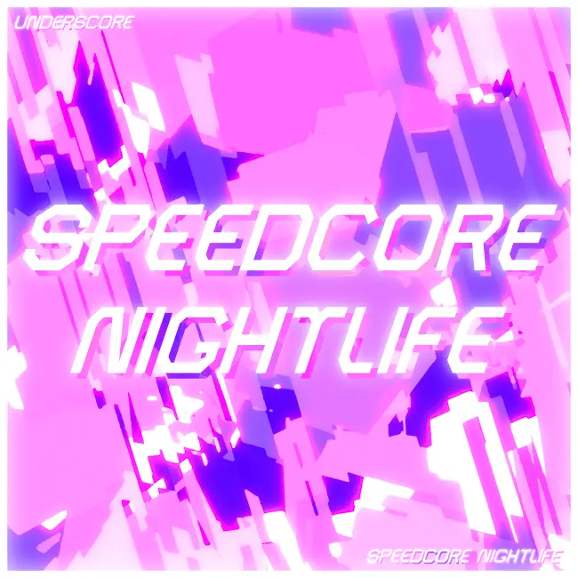
I made an entire album cover for speedcore nightlife, then last minute decided I didn't like it enough, so I made an entirely new one! They're pretty interchangeable honestly :P I love the crystalline background this has, but I prefer the font of the final art.0/0
Album Covers
I feel like all of the parts of this artwork come together beautifully. I especially love the three questions in the bottom right, because to me they evoke a very specific emotion - the same one I was aiming for with the music.
It even inspired the video, because I made the three circular symbols the main focus of the 3D graphics.
Admittedly, the song does feel kinda like it jumps around too quickly from genre to genre, so I decided to make a pure frenchcore version. This art looks sick, especially alongside the original. I just added the text and ran it through a ton of effects - it was easy!
The galaxy in this art is actually miles above the other art I was making at the time too - for some reason, I decided to make each of the four songs their own album cover too (I even have them on my walls), but they're nowhere near as cool as this.
I have great memories of working on this EP.
I got super invested in this kind of futuristic style with lots of little details - it's still one of my main aesthetics!
The song was for an April fools' album titled "127 OVER!!" that me and xtkakeru organized - it looks like one of the Psycho Filth speedcore albums, but it's all slower genres at around 128bpm. Listen, it sounded funny at the time!
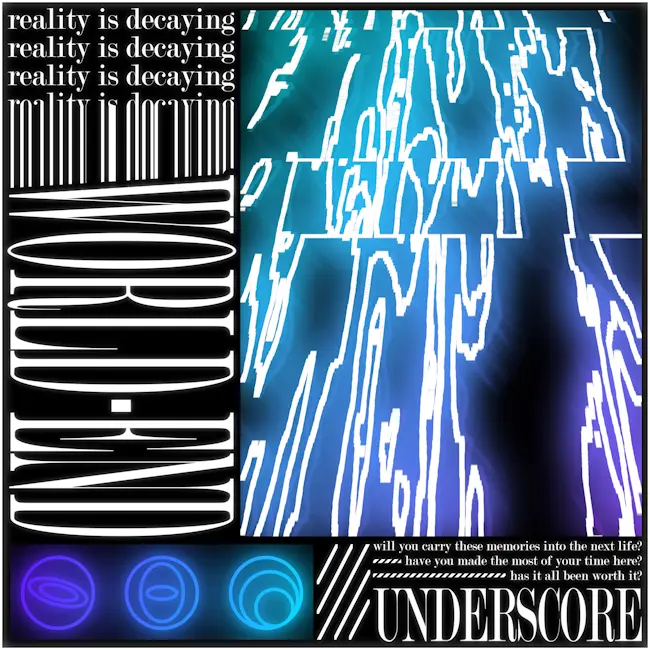
This is such a pretty album cover! I made it right at the start of producing reality is decaying, and it really stood the test of time. Nearly a year later, I stuck with it as the final cover.I feel like all of the parts of this artwork come together beautifully. I especially love the three questions in the bottom right, because to me they evoke a very specific emotion - the same one I was aiming for with the music.
It even inspired the video, because I made the three circular symbols the main focus of the 3D graphics.
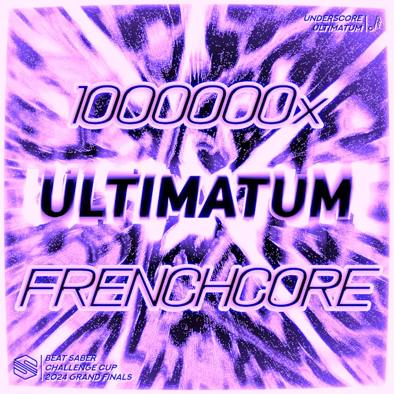
Ultimatum is probably the most fun I've ever had working on a song. The entire process of creating it alongside the tournament organizers for the Beat Saber Challenge Cup was a blast, and watching the grand finals tiebreaker as my music played was really cool!Admittedly, the song does feel kinda like it jumps around too quickly from genre to genre, so I decided to make a pure frenchcore version. This art looks sick, especially alongside the original. I just added the text and ran it through a ton of effects - it was easy!
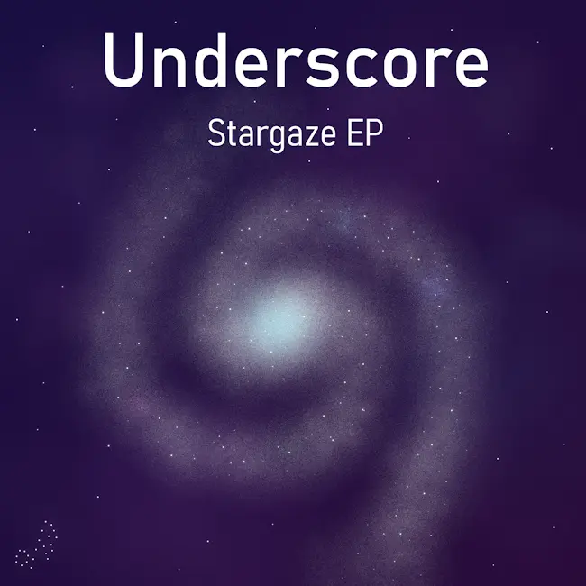
Most of you reading this probably have no idea where this is from. It's one of my first EPs! Technically, I actually released an EP when I was just starting out in music called "Electric Dreams", but it was 10 songs, so we don't count that... and I also released another one in 2020, but it was bad!The galaxy in this art is actually miles above the other art I was making at the time too - for some reason, I decided to make each of the four songs their own album cover too (I even have them on my walls), but they're nowhere near as cool as this.
I have great memories of working on this EP.
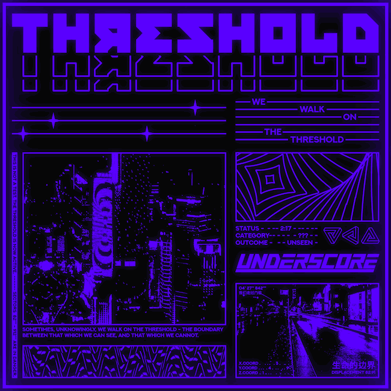
Threshold was a very niche song that I spontaneously made after being inspired by some random song playing at a restaurant. The song is neat, I think it's got good atmosphere and production, but it's definitely slow-paced. I love this album art though! I probably spent more time on this than the song :PI got super invested in this kind of futuristic style with lots of little details - it's still one of my main aesthetics!
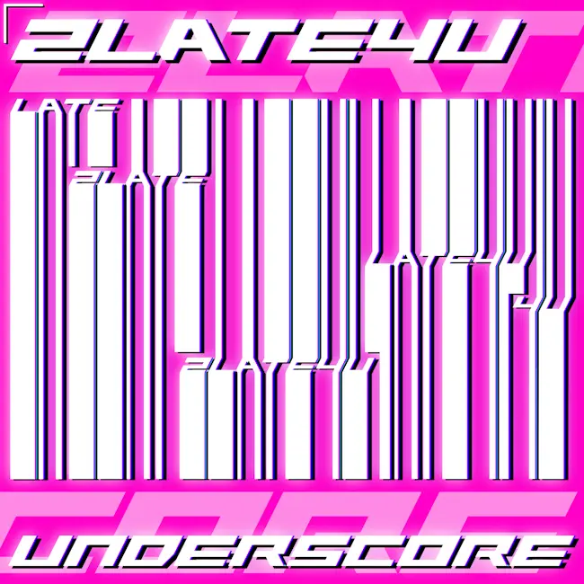
Another pretty unknown song with (I think) sick album art! The pattern that the vertical lines create is very visually interesting, it almost looks like a barcode.The song was for an April fools' album titled "127 OVER!!" that me and xtkakeru organized - it looks like one of the Psycho Filth speedcore albums, but it's all slower genres at around 128bpm. Listen, it sounded funny at the time!
0/0